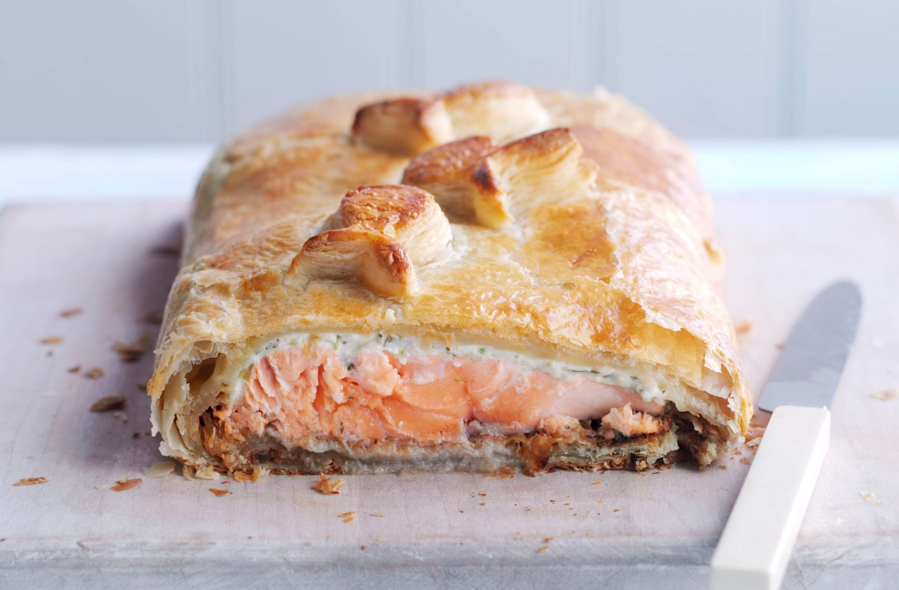

Salmon en croute recipe

Serves:
Prep:
Cooking:
4
30 Min
45 Min
Salmon en croute is a delicious alternative to turkey on Christmas Day, especially if you have people in your party who don't eat meat. One of our favourite Salmon en croute recipes, this delicious salmon en croute recipe is a real classic.
Perfect for special occasions, this delicious salmon en croute recipe combines layers of crisp buttery pastry, spinach and fish to make an impressive treat. Our recipe below will show you how to make Salmon en croute successfully at home. If you’ve got guests to impress, this will really do the trick. This recipe serves 6 people and will take around 45 mins to prepare and cook. It’s the perfect alternative to your Christmas turkey or roast chicken for Sunday dinner. Salmon en croute is also a great party favourite that you’ll want to make time and time again. This recipe is best made and eaten on the same day for the best taste. However, any leftovers however can be stored in an airtight container or wrapped in tin foil and kept in the fridge for up to 2 days.
Ingredients
-
Zest and juice of 1 lemon
- 1tbsp chopped fresh or 1tsp dried dill
- 2 x 450g salmon fillets, skinned and boned
- 680g frozen ready-made puff pastry, thawed
- 300g frozen chopped spinach, thawed
- 105g cooked and peeled prawns
Method
- Mix the lemon juice with the dill, season the mixture and rub it into the salmon fillets. Put them both in a non-metallic bowl and leave to marinate for 1 hour.
- Preheat the oven to 200C/gas 6. Roll out half the pastry on a lightly floured work surface to a rectangle measuring 38 x 20cm. Put on a large baking sheet and prick the base all over with a fork. Chill for 30 mins, then bake until golden brown. Cool on a rack.
- Squeeze out any excess liquid from the spinach, then mix in a bowl with the cream cheese and prawns. Season to taste.
- Put the cooked pastry base onto a baking sheet and place one of the fillets in the centre. Spread with the cream cheese mixture and lay the other fillet on top.
- Brush the border of the pastry with the beaten egg. Roll out the remaining pastry and place over the fish to cover it. Press lightly to seal. Trim the base, allowing a 1.5cm border all the way around and use trimmings to decorate the parcel. Make 2 slits in the top, brush with egg, and bake for 40 to 45 mins.